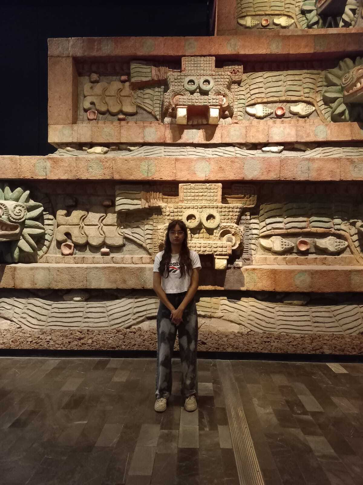

Los totonacas se establecieron en zonas costeras, montañosas y selváticas, principalmente en los actuales estados de Veracruz y Puebla.
Su economía se basaba en la agricultura, cultivando maíz, frijol, calabaza, chile y algodón. También practicaban la pesca, caza y recolección.
Los totonacas formaban una confederación de ciudades y se organizaban en tres señoríos principales: Cempoala, Papantla y Tajín.
Intercambiaban productos como vainilla, algodón, cerámica y obsidiana con otras culturas mesoamericanas, además de controlar rutas comerciales.
Eran politeístas y veneraban al Sol, la Diosa del Maíz y a "Trueno Viejo". Practicaban sacrificios humanos y rituales agrícolas.
Fueron subyugados por los mexicas y obligados a pagar tributo. En 1519, se aliaron con Hernán Cortés para derrotar al Imperio Mexica.
Foto alusiva al museo:
